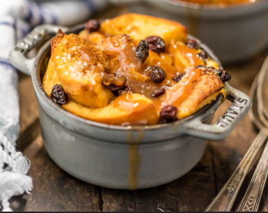

Irish Bread Pudding and Whiskey Sauce

Description
This is a fantastic Irish Bread Pudding and Whiskey Sauce recipe that I stole from a youtube video by a chef at Vivaldi in Canada.
It is rich, has a wonderful texture, and is absolutely delicious in just about every way. I would just be sure to toast the almonds so they have a nice crunch. I left them raw the first time I made it and it wasn't as good as it could have been.
Ingredients
Irish Whiskey Sauce
- 11 1/4 cups whole milk
- 1/2 split vanilla bean, seeds scraped
- 4 large egg yolks
- 2 1/2 tablespoons sugar
- 1/4 teaspoon kosher salt
Bread Pudding
- 3/4 cup raisins
- 1/3 cup Irish whiskey, such as Jameson
- 1 pound Pullman-style brioche or challah cut into 1/2-inch cubes
- 3/4 cup sliced almonds (toast these!)
- 3/4 cup plus 2 tablespoons sugar
- 1 teaspoon ground cinnamon (I used a bit less than prescribed amount)
- 4 large eggs
- 1 large egg yolk
- 2 1/2 cups whole milk
- 1 tablespoon pure vanilla extract
- 3/4 teaspoon freshly ground nutmeg (I left this out because nutmeg is gross)
- 1/4 teaspoon kosher salt
- 2 tablespoons unsalted butter, melted, plus extra for greasing the pan
Steps
Make the Sauce
- Fill a medium bowl with ice water. In a small saucepan, heat the milk with the vanilla bean and seeds until it just comes to a simmer. Discard the vanilla bean.
- Meanwhile, in a medium bowl, whisk the egg yolks with the sugar and salt until the mixture is pale yellow and thickened. Whisking constantly, drizzle in the hot milk.
Pour the mixture into a clean saucepan and cook over moderately low heat, stirring occasionally, until the sauce thickens and coats the back of a spoon, 7 to 8 minutes.
Strain the custard through a fine sieve into a medium bowl and set the bowl in the ice bath until cold. Cover and refrigerate the sauce.
Make the Bread Pudding
- Preheat the oven to 350F.
- In a small bowl, combine the raisins and whiskey and let stand for 30 minutes. Drain, reserving the whiskey.
- Toast the almonds to your desired liking, not too much though!
- Meanwhile, on a large rimmed baking sheet, spread the bread cubes in an even layer. Toast the bread for about 5 minutes, until
lightly golden. On another baking sheet, spread the almonds in an even layer and toast for 3 to 4 minutes, until lightly golden.
Reduce the oven temperature to 325F.
- AGrease a 13- x 9-inch glass baking dish. In a small bowl, stir 2 tablespoons of the sugar with the cinnamon. In a large bowl,
whisk the whole eggs with the egg yolk and the remaining 3/4 cup of sugar until well blended. Whisk in the milk, cream, almonds,
raisins, vanilla, nutmeg, and salt. Add three-fourths of the bread cubes, stirring to moisten. Let stand for 5 minutes, then pour
the bread mixture into the prepared baking dish. Scatter the remaining bread cubes on top, pressing down gently. Brush the bread cubes
with the melted butter, then sprinkle the cinnamon sugar on top.
- Bake for 50 to 60 minutes, until the top is deep golden and the custard is set. Transfer the bread pudding to a rack to cool for 30 minutes.
- Stir 1 to 2 tablespoons of the reserved soaking whiskey into the sauce and serve with the warm bread pudding.
Home